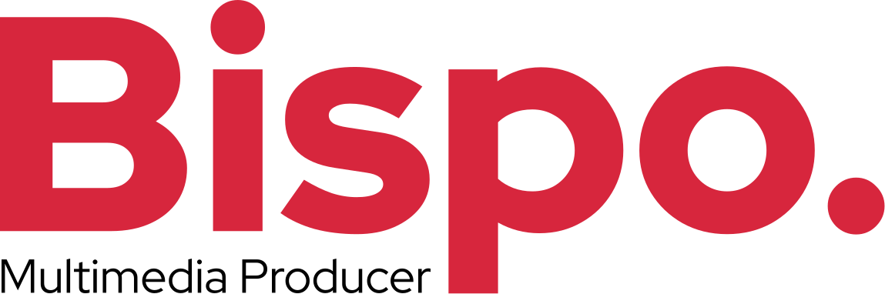
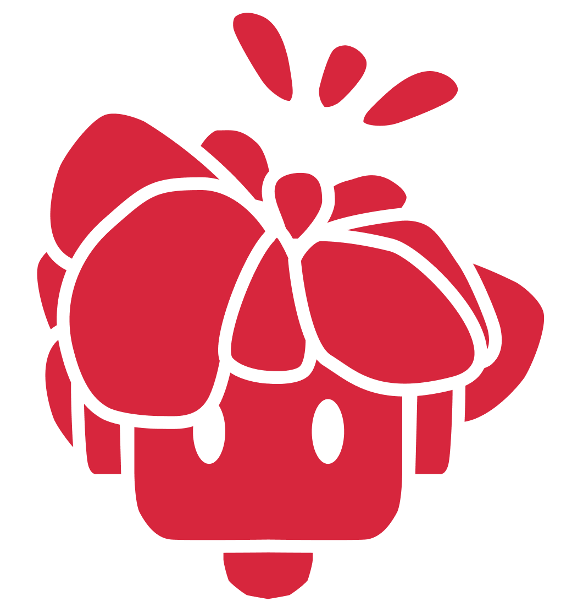

Projetos
Uma seleção de trabalhos que atravessam design, audiovisual, tecnologia e experimentação.
Trajetória
Técnico em Internet of Things
Senac São Paulo · Ensino Médio Técnico
Assistente de aulas, estágio
Escola Uniart
Primeira experiência profissional em ambiente criativo: design digital, produção visual e apoio ao uso de ferramentas de edição, ilustração e motion.
Orientador voluntário
Fundação Projeto Pescar
Apoio em atividades de informática básica e comunicação social, incluindo a preparação de uma aula sobre hard skills e soft skills.
Produção Multimídia
Senac São Paulo · Ensino Superior
Design Gráfico · Audiovisual · Fotografia · UI/UX · Prototipagem · Motion Design · Modelagem 3D · Gestão de Eventos
Designer de Conteúdo, estágio
SIEG Soluções Fiscais Estratégicas
Peças gráficas e conteúdos visuais para comunicação interna e externa, seguindo diretrizes de identidade e objetivos de comunicação da empresa.
Sobre mim
Sou Luís Bispo de Andrade, produtor multimídia e designer gráfico em formação, de São Paulo.
Meu trabalho conecta design, conteúdo e tecnologia. Um mesmo projeto pode começar como uma ideia visual, virar uma peça gráfica, passar pelo vídeo ou pelo 3D e terminar como uma experiência de interface.
Uso inteligência artificial como ferramenta de processo, não como atalho. Para mim, tecnologia amplia possibilidades — mas é a decisão de design que dá direção ao resultado.
Cada projeto também é uma oportunidade de aprender algo que eu ainda não sabia fazer.
-
Design Gráfico
-
Direção Visual
-
Edição de Vídeo
-
Motion Design
-
Fotografia
-
UX/UI
-
Modelagem 3D
-
IA aplicada ao design
Carregando…

Contato